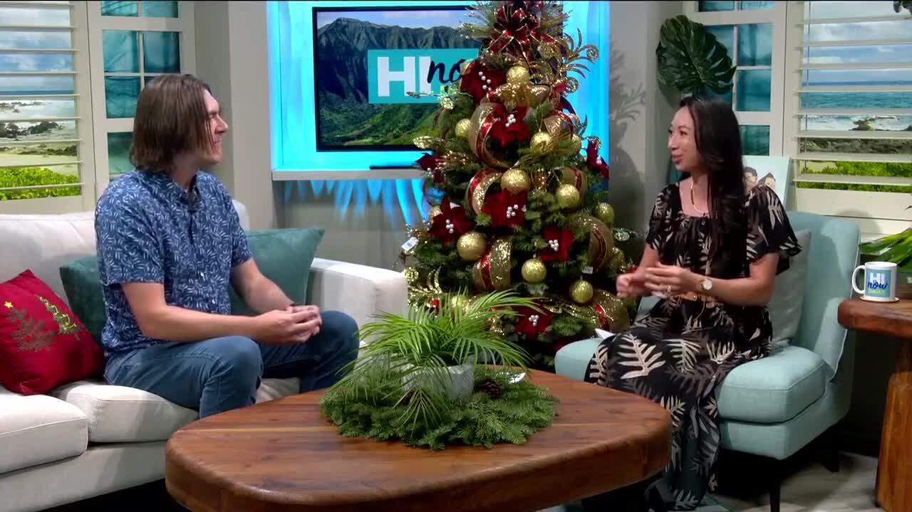
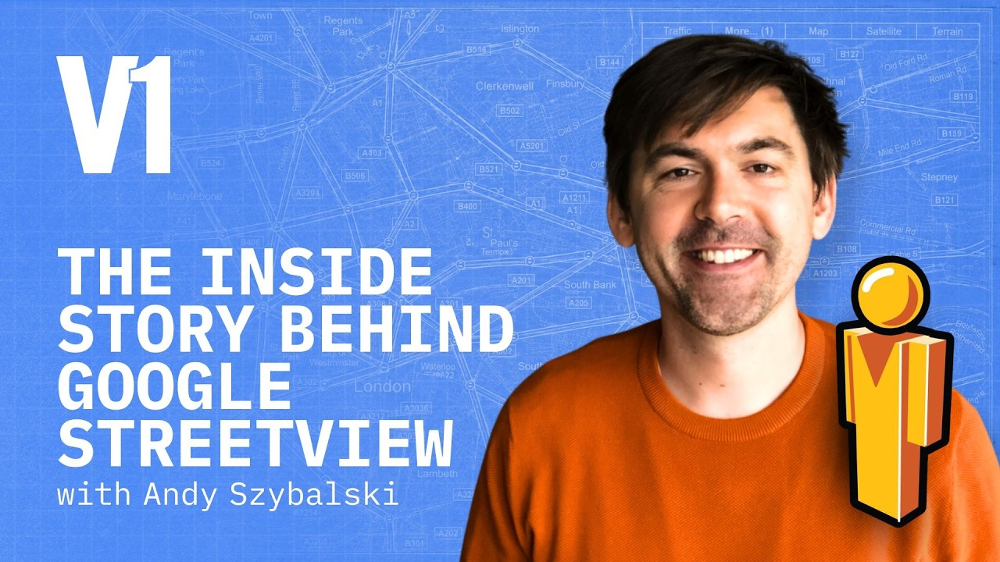
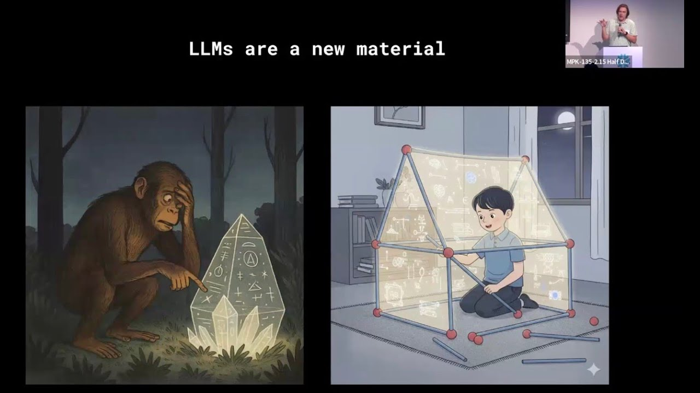
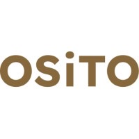
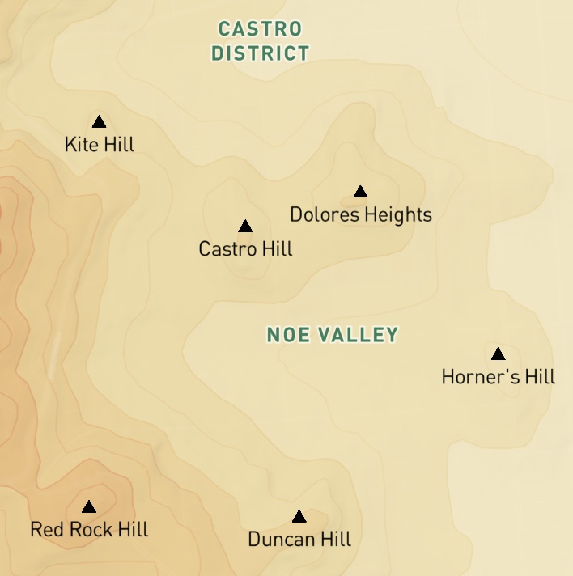
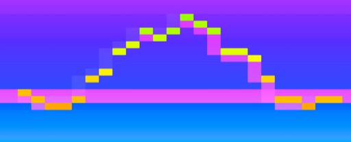
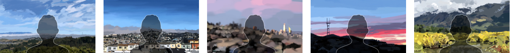
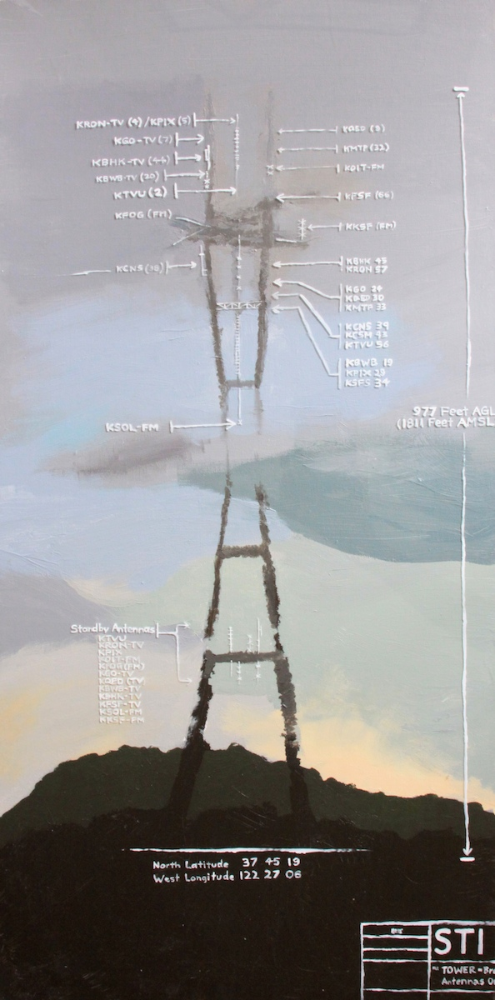

Hi, I’m Andy Szybalski!
sha · ’ball · ski
I’m a designer and engineer, and currently a Partner Product Design Director at Microsoft AI. I got there when my startup Cove joined Microsoft in 2026.
I’m also co-founder and board chair of Tradewinds School, Hawaii’s first school designed for gifted minds, opening in Kaimukī in 2026. You can see a segment about it on HI Now Daily.
Earlier, I co-founded Uber Eats, and was an early designer on Google Maps where I launched Street View. Here’s the story of how it began and a talk about the early days.
Talks & Press

Tradewinds School on HI Now Daily
The early days of Street View
“The Design Material Has Changed”Advising
Between Uber and Cove, I spent two years primarily investing and advising seed stage, series A, and series B startups. These days I’m focused on Microsoft AI and Tradewinds School, but I still do occasional advising and angel investing in special cases.
I’ve advised these seed-stage, series A, and series B startups on design and product:
- Regrello — Asana for manufacturing supply chains (acq. Salesforce)
- Pepper — Connecting food suppliers with restaurants (now Series C)
- Office Hours — Book time with knowledge professionals from around the world
- Doorstead — Opendoor for rentals
- Cottage — Solving housing affordability by making it easy to build an ADU (acq. RenoFi)
- The Pill Club — Helping women access affordable birth control and more
- Mighty Health — Personal coach for exercise, nutrition and wellness
- Flexspace — On demand marketplace for co-working space
- Flowly — VR and biofeedback for pain and anxiety
Design Notes
This is not a full portfolio, but you can look at a few design case studies describing some of my work on Cove, Uber Eats, and Street View.
Side Projects

Osito 2023–2024
With a team of three, I self-funded and built an AI-powered travel booking tool. It generated a small amount of revenue before I abandoned it to work on Cove.

Onion Map 2020
An experimental map that deemphasizes streets and highlights the relationship between topography and neighborhood names, built with OpenStreetMap data and a bespoke Mapbox style.

Degen Blues 2022
An experiment in generative music and smart contracts.

Zoom Backgrounds for Biden 2020
Digital paintings made as Zoom backgrounds in early Covid—started as a gift for friends and grew into a commission model that raised $10,000 for the Biden campaign.
{kind=link}

Sutro Tower Inc.
An oil painting showing the TV and radio antennas on the tower—one of my favorite pieces on canvas.
Older Projects
I built several macOS apps but… Shellsilver, Pyper, and Lunamoth are no longer maintained or compatible with current macOS—but there are lots of great alternatives out there now.
Contact
You can get in touch with me on LinkedIn or X, or email me at andyszy@gmail.com.